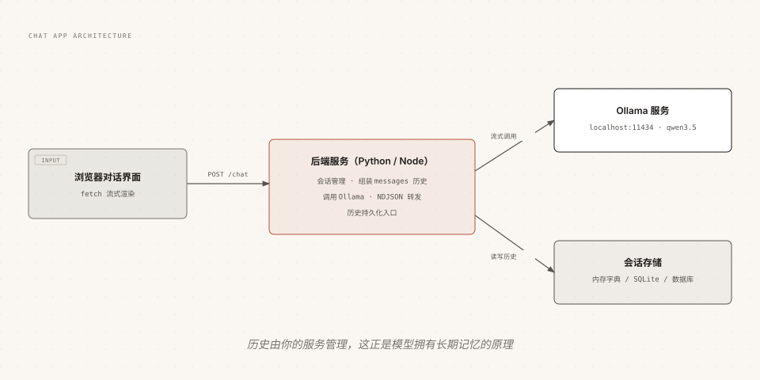

Ollama Programming Language Integration
This article systematically lays out four code paths for calling Ollama: the Python official library, the JavaScript official library, native HTTP, and OpenAI / Anthropic compatible SDKs, and ties them together with two hands-on projects.
Official SDK: Python and JavaScript
The official team directly maintains two libraries with consistent API design; if you know one, you know both.
Installation
pip install ollama
# JavaScript / TypeScript
npm install ollama
Comparison of the core methods in the two libraries:
| Method | Purpose | Key Parameters |
|---|---|---|
| chat | Multi-turn dialogue (main method) | model、messages、stream、tools、think、format、options |
| generate | Single-turn text generation | model、prompt、stream、suffix |
| embed | Vector embedding | model, input (single item or array) |
| list | List local models | None |
| pull | Pull a model (progress can be monitored) | model、stream |
A full-parameter chat call in Python covers most of the capabilities learned in the previous articles:
Example
from pydantic import BaseModel
# Define the schema for structured output
class Answer(BaseModel):
site: str
free: bool
response = chat(
model='qwen3.5',
messages=[{'role': 'user', 'content': 'Introduce RUNOOB'}],
stream=False, # Streaming toggle
think=False, # Thinking mode toggle
format=Answer.model_json_schema(), # Structured output schema
options={'temperature': 0.3, 'num_ctx': 8192}, # Generation parameters
)
print(Answer.model_validate_json(response.message.content))
The equivalent code in JavaScript:
Example
// Streaming chat example
const stream = await ollama.chat({
model: 'qwen3.5',
messages: [{ role: 'user', content: 'Introduce RUNOOB in three sentences' }],
stream: true,
})
// Output chunk by chunk
let content = ''
for await (const chunk of stream) {
process.stdout.write(chunk.message.content)
content += chunk.message.content
}
When connecting to a non-default address (such as a remote server or Ollama Cloud), specify it with host and headers:
Example
from ollama import Client
# Connect to remote Ollama or Ollama Cloud (Bearer authentication)
client = Client(
host='https://ollama.com',
headers={'Authorization': 'Bearer ' + os.environ.get('OLLAMA_API_KEY')},
)
response = client.chat(model='qwen3.5', messages=[
{'role': 'user', 'content': 'Introduce RUNOOB in one sentence'}
])
Native HTTP: curl Quick Reference
When writing scripts, debugging APIs, or troubleshooting, curl is the fastest tool.
| Scenario | Command |
|---|---|
| Single-turn generation (non-streaming) | curl http://localhost:11434/api/generate -d '{"model":"qwen3.5","prompt":Hello,"stream":false}' |
| Chat | curl http://localhost:11434/api/chat -d '{"model":"qwen3.5","messages":[...],"stream":false}' |
| Vector embedding | curl http://localhost:11434/api/embed -d '{"model":"embeddinggemma","input":"Text"}' |
| List models | curl http://localhost:11434/api/tags |
| Model details | curl http://localhost:11434/api/show -d '{"model":"qwen3.5"}' |
| Pull a model | curl http://localhost:11434/api/pull -d '{"model":"qwen3.5:4b"}' |
| Delete a model | curl -X DELETE http://localhost:11434/api/delete -d '{"model":"qwen3.5:4b"}' |
Reusing OpenAI / Anthropic SDK
When migrating existing projects, the compatibility layer is far less trouble than rewriting.
In a JavaScript project, use the OpenAI SDK to connect to local models:
Example
// Only change base_url; api_key can be anything
const openai = new OpenAI({
baseURL: "http://localhost:11434/v1",
apiKey: "ollama",
})
const res = await openai.chat.completions.create({
model: "qwen3.5",
messages: [{ role: "user", content: "Introduce RUNOOB in one sentence" }],
})
console.log(res.choices[0].message.content)
The same applies in a Python project using the Anthropic SDK:
Example
# Point base_url to local, key can be anything
client = anthropic.Anthropic(
base_url='http://localhost:11434',
api_key='ollama',
)
message = client.messages.create(
model='qwen3.5',
max_tokens=1024,
messages=[{'role': 'user', 'content': 'Introduce RUNOOB in one sentence'}],
)
print(message.content[0].text)
Recommendation: for new projects, use the official SDK directly (fullest feature set); for existing projects, go through the compatibility layer based on the current SDK (minimal changes); when integrating with a framework that only supports the OpenAI protocol, the compatibility layer is the only path.
Practice 1: Command-Line Chat Script
In fewer than 40 lines of Python, assemble chat, streaming, and history management from the earlier sections into a usable terminal chat tool.
Example
# Run: python cli_chat.py
from ollama import chat
MODEL = 'qwen3.5:4b'
# Session history: system sets the role, then append conversation messages
messages = [{
'role': 'system',
'content': 'You are RUNOOB's programming assistant. Answer concisely and provide example code.',
}]
print(f'Start chat (model {MODEL}), type exit to quit.')
while True:
user_input = input('\n'You: ').strip()
if user_input.lower() == 'exit':
break
if not user_input:
continue
# Append the user message and start a streaming request
messages.append({'role': 'user', 'content': user_input})
stream = chat(model=MODEL, messages=messages, stream=True)
# Print chunk by chunk while accumulating the full reply
print('Assistant: ', end='', flush=True)
reply = ''
for chunk in stream:
reply += chunk.message.content
print(chunk.message.content, end='', flush=True)
# Key: append this round's reply back into the history so the model can "remember" the context
messages.append({'role': 'assistant', 'content': reply})
$ python cli_chat.py 开始对话（模型 qwen3.5:4b），输入 exit 退出。 你：什么是 Python 的切片？ 助手：切片是用 [start:stop:step] 从序列中取子序列的语法， 例如 s[1:3] 取索引 1 到 2 的元素。 你：给个 RUNOOB 风格的例子 助手：s = "RUNOOB" print(s[1:4]) # 输出 UNO 你：exit
There is only one core point: each turn, append both the user message and the full assistant reply into messages. The model itself is stateless; "memory" comes entirely from this list.
Practice 2: Multi-Turn Dialogue Web App with Memory
Bringing the same idea to the browser requires a backend to coordinate in the middle: manage conversation history, call Ollama, and forward the streaming results to the frontend.

Backend: Flask Wrapping Ollama Streaming API
Example
# Install dependencies: pip install flask ollama
from flask import Flask, request, Response, stream_with_context
from ollama import chat
app = Flask(__name__)
# Session history temporarily stored in memory: a real project should use a database instead
sessions = {}
@app.route('/chat')
def do_chat():
session_id = request.args.get('session', 'default')
user_input = request.args.get('q', '')
if not user_input:
return {'error': 'Missing q parameter'}
# Get (or initialize) the history for this session
history = sessions.setdefault(session_id, [
{'role': 'system', 'content': 'You are RUNOOB's programming assistant.'}
])
history.append({'role': 'user', 'content': user_input})
# Streaming generation, forwarded line by line to the frontend in NDJSON format
def generate():
reply = ''
stream = chat(model='qwen3.5:4b', messages=history, stream=True)
for chunk in stream:
reply += chunk.message.content
yield chunk.message.content + '\n'
# Key: write the full reply back into history to form memory
history.append({'role': 'assistant', 'content': reply})
return Response(
stream_with_context(generate()),
mimetype='application/x-ndjson',
)
if __name__ == '__main__':
app.run(port=5000)
Frontend: fetch Streaming Reads
Example
async function ask(question) {
const resp = await fetch(
`/chat?session=demo&q=${encodeURIComponent(question)}`
)
const reader = resp.body.getReader()
const decoder = new TextDecoder()
while (true) {
const { done, value } = await reader.read()
if (done) break
// Append each chunk to the page as it arrives for a typewriter effect
document.getElementById('answer').textContent +=
decoder.decode(value)
}
}
Running and Verification
Example
python server.py
# Simulate two consecutive requests to verify memory
curl http://localhost:5000/chat?session=demo&q=什么YesPythonSlice
curl "http://localhost:5000/chat?session=demo&q=再GiveitemsRUNOOBWind格ofExamples"
In the second request, the model continues answering along the "slicing" topic, which shows the server-side session history is working; using a different session parameter starts a brand-new session with no interference.
Other ExtensionsThis skeleton of a few dozen lines already covers the three key elements of a ChatGPT-like app: session isolation (session parameter), streaming experience (NDJSON forwarding), and persistent memory (history write-back). Add database storage and a multi-session list, and it becomes the prototype of a complete hands-on project; the Web App Practice chapter will continue to extend it.